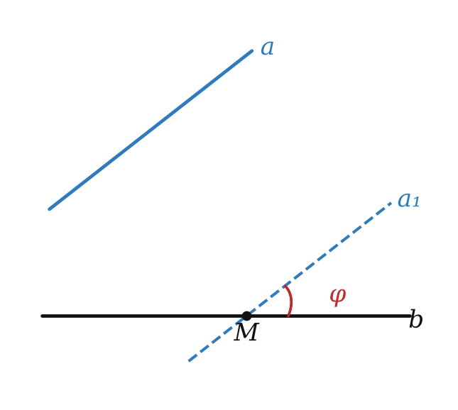
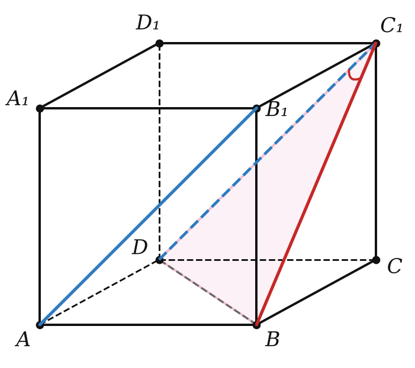
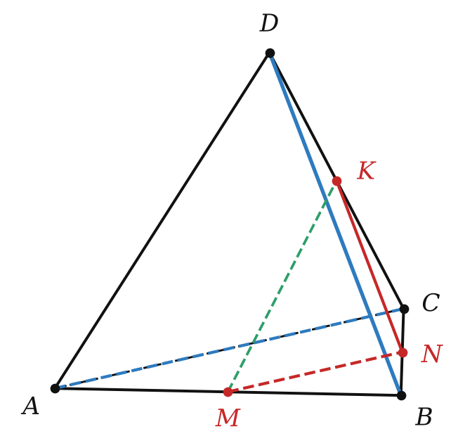

от 0° до 90° — для любых двух прямых
| прямые | угол |
|---|---|
| пересекаются | наименьший из образовавшихся углов (≤ 90°) |
| параллельны | 0° |
| скрещиваются | угол между пересекающимися прямыми, им параллельными |



Угол между прямыми — всегда от 0° до 90°